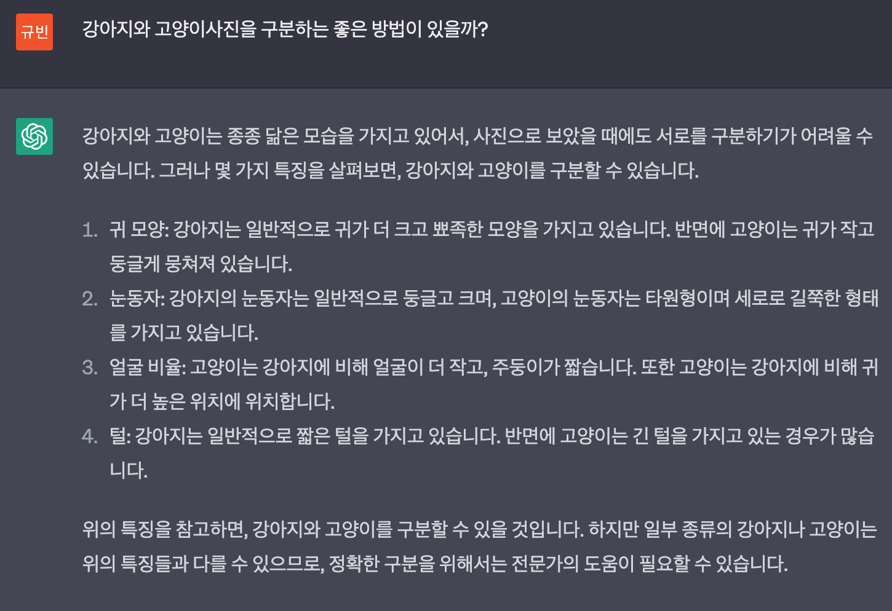
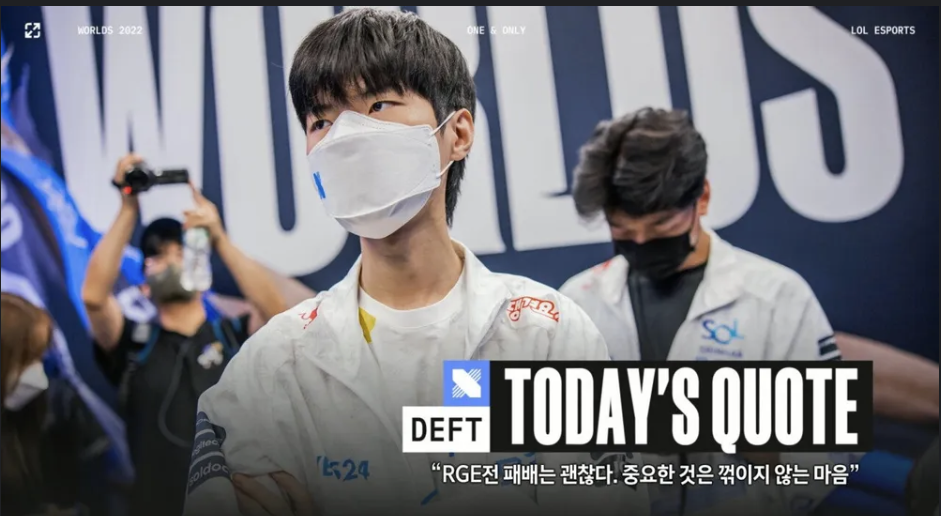
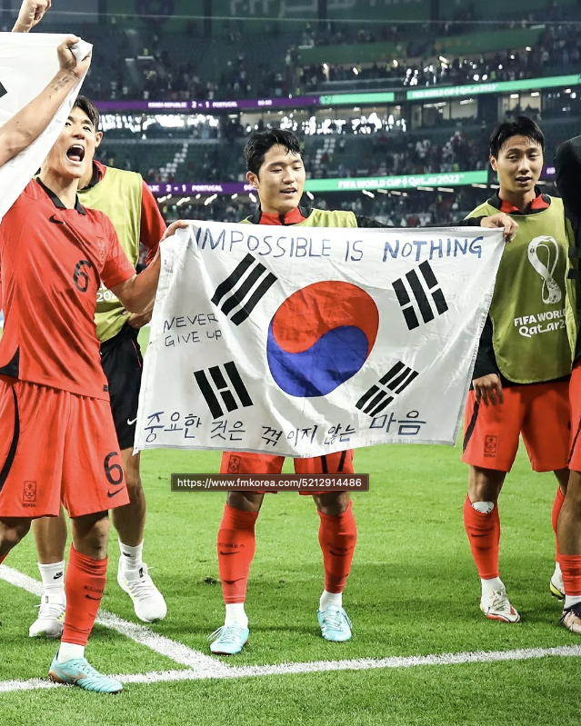
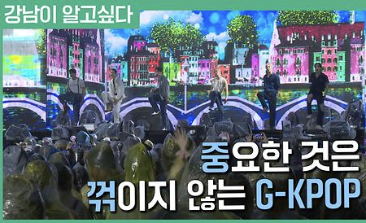

강의영상
youtube: https://youtube.com/playlist?list=PLQqh36zP38-x9SwQZVCK1ru5UPVWzeXDQ
중간고사에 대하여
학점
- Linear Input & Linear Output
- 이상: 노력과 점수는 비례 & 점수와 학점이 비례
- 현실: 노력과 점수는 비례X & 점수와 학점은??
- [300, 300, 100, 90, 41, 40, 40, 30, 20] 인 학생들의 학점을 나누는 방법?
ChatGPT
- 잘 쓰는 방법 (일반적)
- 질문을 잘해야.. + 많이 쓰는 언어를 질문 해야.. +
- 프롬프트 엔지니어: https://www.hani.co.kr/arti/economy/it/1084265.html
- 잘 쓰는 방법 (제 생각)
- 기계가 이해할 수 있는 subgoal을 잘 만들어야 함.
- 결국 “모호한 하나의 문제 \(\Rightarrow\) 모호하지 않은 여러개의 문제” 로 문제를 바꾸는 능력이 필요.

학생들에게 하고 싶은 말 (1)
- 성장과 분배
- 본인의 역량을 분배하는 방식에 대해서도 생각해 보세요
학생들에게 하고 싶은 말 (2)
- 중요한 것은 꺾이지 않는 마음
- 기말 잘보면 됩니다.
밈(Meme)과 클래스
중꺾마의 시작
ref: 나무위키
- 중꺾마? “중요한 것은 꺾이지 않는 마음”의 줄임
- 유래

2022년 월드 챔피언십 그룹 스테이지 1라운드 로그전에서 패배 후, 쿠키뉴스와의 인터뷰에서 데프트는 패배에 대한 감상을 질문 받자
“오늘 지긴 했지만… 저희끼리만 안 무너지면 충분히 이길 수 있을 것 같아요”
라고 답변했는데, 이 인터뷰를 했던 쿠키뉴스의 문대찬 기자가 해당 인터뷰 영상의 제목을 다음과 같이 지었다.
DRX 데프트 “로그전 패배 괜찮아, 중요한 건 꺾이지 않는 마음”
중꺾마의 확산
- 예시1: 스포츠 능력시험
- 예시2: 한국 vs 포르투갈 (카타르 월드컵)

- 예시3: 중꺾마의 파급력 정리
중꺾마의 변형 및 확산
- 예시1: 중요한 것은 꺾이지 않는 할인
- 예시2: 중요한건 꺾이지 않는 자기주도력
- 예시3: 중요한 것은 꺾이지 않는 G-KPOP (강남구청 이벤트)

- 예시4: 기타변형
- 중요한 것은 다 꺾어버리는 마음: 같은 DRX 소속 게이머이자 철권 E스포츠계의 레전드로 불리는 무릎은 ’중요한 것은 다 꺾어버리는 마음’이라고 변형
- 중요한 건: 포르투갈전을 본 데프트 김혁규 선수 본인도 인스타그램 스토리에 이 유행어를 일부 인용했다. 전체를 말한 것은 아니고 ’중요한 건…’이라고만 적었지만 의도한 바는 누가봐도 중꺾마.
- 중요한 것은 꺾였는데도 그냥 하는 마음: 박명수
밈과 인터넷밈
- 밈이란? (유전자처럼) 복제가능한 something
- 이기적 유전자에서 제시한 개념
- 유전자는 (1) 복제 (2) 변형되면서 전파되는 속성이 있다는 사실을 관찰
- 종교, 사상, 이념도 유전자처럼 (1) 복제 (2) 변형되면서 전파되더라..
- 밈 = 유전자의 일반화된 개념 = 복제가능한 something
- 인터넷 밈이란?
- 밈의 한 형태
- 인터넷을 통하여 (1)복제 (2)변형되면서 전파되는 something
- 중꺾마의 확산예제들을 통해 살펴본 밈의 의미
- 딱히 정형화 하기 어렵지만 위의 예제들은 복제가 되는 어떠한 원형이 있다. 이것을 밈(=유전자)이라고 부른다!!
- 많은 사람들에게 그 복제내용이 확산되어 재생산된다. 이것을 밈화라고 한다.
클래스
클래스란? (다른교재)
- 클래스의 정의
- 많은 교재에서 정의를 회피한다.
- 대신에 비유적으로 설명하거나 다른 대상을 가져와서 설명한다.
- 클래스에 대한 비유적 설명 (implicit definition)
점프투파이썬: 클래스는 과자틀과 비슷하다. 클래스란 똑같은 무엇인가를 계속 만들어 낼 수도 있는 설계도면이고 객체란 클래스로 만든 피조물을 뜻한다.
위키피디아: In object-oriented programming, a class is an extensible program-code-template for creating objects, providing initial values for state (member variables) and implementations of behavior (member functions or methods). // 객체 지향 프로그래밍에서 클래스는 상태(멤버 변수) 및 동작 구현(멤버 함수 또는 메서드)에 대한 초기 값을 제공하는 객체 생성을 위한 확장 가능한 프로그램 코드 템플릿입니다.
TCP스쿨: 클래스(class)란 객체를 정의하는 틀 또는 설계도와 같은 의미로 사용
티스토리 블로그: 학생 클래스..?
기타 서적들.. (진짜 무슨 한 챕터씩 설명하고 있음)
클래스란? (제 생각)
- 클래스에 대한 명시적 정의 (책에 나온것 아니고 제 생각입니다!!) - 클래스는 복제, 변형, 재생산을 용이하게 하기 위해 만들어진 확장가능한 프로그램의 코드의 단위(extensible program-code-template)이다. 즉 밈이다.
- 클래스도 결국 밈이다. 생각해보면 클래스를 만들고 사용하는 과정이 인터넷에서 밈을 만들고 노는것과 닮아 있다.
| 단계 | 인터넷밈 | 클래스 | 레포트표지 |
|---|---|---|---|
| 1단계: 구상 | \(\bullet\) 이거 재미있다. \(\bullet\) 밈화하자. |
\(\bullet\) 이 코드 반복해서 자주 쓸 것 같다. \(\bullet\) 이 코드를 쉽게 찍어내는 (복사할 수 있는) 클래스를 만들자 |
\(\bullet\) 레포트 표지를 자주 만들 것 같음 \(\bullet\) 양식파일을 만들까? |
| 2단계: 틀생성 | \(\bullet\) “밈틀”: 복사하고 싶은 속성을 추려 밈을 생산하기에 유리한 틀을 만듬 | \(\bullet\) 클래스의 선언 | \(\bullet\) REPORT_2023_최규빈.hwp 양식파일을 생성 |
| 3단계: 틀 \(\to\) 복제 | \(\bullet\) 밈화: “밈틀”에서 다양한 밈을 만들고 놈 | \(\bullet\) 인스턴스화: 클래스에서 인스턴스를 생산 | \(\bullet\) 레포트 양식표지에서 다양한 레포트를 냄 |
| 4단계: 틀 \(\to\) 틀변경 \(\to\) 복제 | \(\bullet\) 생각해보니까 초기 밈틀은 시시함. \(\bullet\) 초기 밈틀을 수정해 새로운 밈틀을 만들고 더 재미있는 밈을 만들고 놈 |
\(\bullet\) 초기클래스와 비슷한 클래스를 선언할 일이 생김 \(\bullet\) 상속,오버라이딩: 초기클래스를 상속받아 클래스를 새롭게 정의하고 인스턴스를 재 생산 |
\(\bullet\) 공모전에 참가하여 결과보고서를 작성할 일이 생김. \(\bullet\) REPORT_2023_최규빈.hwp 를 적당히 변형하여 수정된 틀을 만들고 결과보고서 생산. |